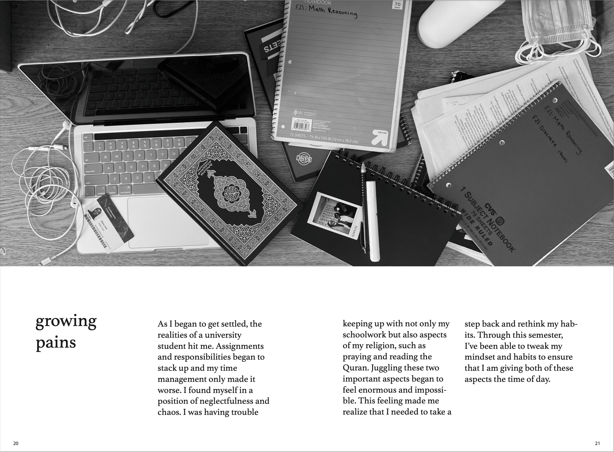
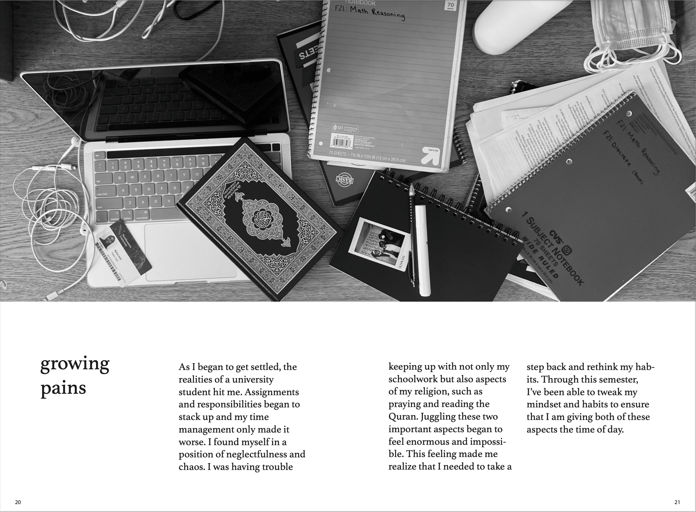

I created a personal photo journal to document my journey of self-exploration during my first year of college and I used
this as an outlet to remind myself of what's most meaningful to me. Amist the chaos and confusion of college life,
this journal gave me an opportunity hit pause on life and truly reflect on my surroundings and how far I've come. All illustrations
were created using Adobe Illustrator, the page layout was organized using Adobe InDesign, and all photos were taken by me.
For this project, I wanted to design an app that gave college students easy access to various resources
so they can reassure and guide themselves through feelings of imposter syndrome. I took inspiration from various meditation apps to enhance the user's experience.
My main design goals were to make everything legible, clearly labeled, and calm. This app design was created using Figma.
Pasta Recipe Gif
This project is my animated rendition of Buzzfeed's Tasty cooking videos. The illustrations of all the ingredients and
cookware was done in Adobe Illustrator, the frames were organized in Adobe InDesign, and the gif was put together
in Adobe Photoshop.
 
